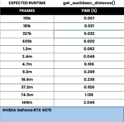
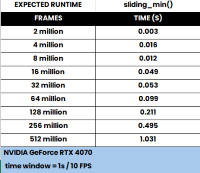

GPU operations
Methods for performing image, classification, and data transformations on the GPU
Geometry
- simba.data_processors.cuda.geometry.get_convex_hull(pts: ndarray) ndarray[source]
Compute the convex hull for each set of 2D points in parallel using CUDA and the Jarvis March algorithm. This function processes a batch of 2D point sets (frames) and computes the convex hull for each set. The convex hull of a set of points is the smallest convex polygon that contains all the points.
The function uses a variant of the Gift Wrapping algorithm (Jarvis March) to compute the convex hull. It finds the leftmost point, then iteratively determines the next point on the hull by checking the orientation of the remaining points. The results are stored in the results array, where each row corresponds to a frame and contains the indices of the points forming the convex hull. Points not on the hull are marked with -1.
EXPECTED RUNTIMES
FRAMES
TIME (S)
110k
0.009
181k
0.014
327k
0.026
620k
0.049
1.2m
0.095
2.4m
0.18
4.7m
0.351
9m
0.865
17.9m
1.452
35.8m
5.695
71.6m
7.243
NVIDIA GeForce RTX 4070
7 body-parts
- Parameters:
pts – A 3D numpy array of shape (M, N, 2) where: - M is the number of frames. - N is the number of points (body-parts) in each frame. - The last dimension (2) represents the x and y coordinates of each point.
- Returns:
An upated 3D numpy array of shape (M, N, 2) consisting of the points in the hull.
- Return type:
np.ndarray
- Example:
>>> video_path = r"/mnt/c/troubleshooting/mitra/project_folder/videos/501_MA142_Gi_CNO_0514.mp4" >>> data_path = r"/mnt/c/troubleshooting/mitra/project_folder/csv/outlier_corrected_movement_location/501_MA142_Gi_CNO_0514 - test.csv" >>> df = read_df(file_path=data_path, file_type='csv') >>> frame_data = df.values.reshape(len(df), -1, 2) >>> x = get_convex_hull(frame_data)
- simba.data_processors.cuda.geometry.is_inside_circle(x: ndarray, y: ndarray, r: float) ndarray[source]
Determines whether points in array x are inside the rectangle defined by the top left and bottom right vertices in array y.
- Parameters:
x (np.ndarray) – 2d numeric np.ndarray size (N, 2).
y (np.ndarray) – 2d numeric np.ndarray size (2, 2) (top left[x, y], bottom right[x, y])
- Return np.ndarray:
2d numeric boolean (N, 1) with 1s representing the point being inside the rectangle and 0 if the point is outside the rectangle.
- simba.data_processors.cuda.geometry.is_inside_polygon(x: ndarray, y: ndarray) ndarray[source]
Determines whether points in array x are inside the polygon defined by the vertices in array y.
This function uses GPU acceleration to perform the point-in-polygon test. The points in x are tested against the polygon defined by the vertices in y. The result is an array where each element indicates whether the corresponding point is inside the polygon.

- Parameters:
x (np.ndarray) – An array of shape (N, 2) where each row represents a point in 2D space. The points are checked against the polygon.
y (np.ndarray) – An array of shape (M, 2) where each row represents a vertex of the polygon in 2D space.
- Return np.ndarray:
An array of shape (N,) where each element is 1 if the corresponding point in x is inside the polygon defined by y, and 0 otherwise.
- Example:
>>> x = np.random.randint(0, 200, (i, 2)).astype(np.int8) >>> y = np.random.randint(0, 200, (4, 2)).astype(np.int8) >>> results = is_inside_polygon(x=x, y=y) >>> print(results) >>> [1 0 1 0 1 1 0 0 1 0]
- simba.data_processors.cuda.geometry.is_inside_rectangle(x: ndarray, y: ndarray) ndarray[source]
Determines whether points in array x are inside the rectangle defined by the top left and bottom right vertices in array y.
EXPECTED RUNTIMES
FRAMES (MILLION)
CUDA JIT GPU (S)
NUMBA CPU TIME (S)
2 million
0.005
0.022
4 million
0.009
0.031
8 million
0.016
0.097
16 million
0.028
0.199
32 million
0.054
0.399
64 million
0.111
0.769
128 million
0.33
1.3
256 million
0.666
2.531
512 million
1.161
7.273
1 billion
3.828
13.342
NVIDIA GeForce RTX 4070
- Parameters:
x (np.ndarray) – 2d numeric np.ndarray size (N, 2).
y (np.ndarray) – 2d numeric np.ndarray size (2, 2) (top left[x, y], bottom right[x, y])
- Return np.ndarray:
2d numeric boolean (N, 1) with 1s representing the point being inside the rectangle and 0 if the point is outside the rectangle.
- simba.data_processors.cuda.geometry.poly_area(data: ndarray, pixels_per_mm: Optional[float] = 1.0, batch_size: Optional[int] = 5000000) ndarray[source]
Compute the area of a polygon using GPU acceleration.
This function calculates the area of polygons defined by sets of points in a 3D array. Each 2D slice along the first dimension represents a polygon, with each row corresponding to a point in the polygon and each column representing the x and y coordinates.
The computation is done in batches to handle large datasets efficiently.
- Parameters:
data – A 3D numpy array of shape (N, M, 2), where N is the number of polygons, M is the number of points per polygon, and 2 represents the x and y coordinates.
pixels_per_mm – Optional scaling factor to convert the area from pixels squared to square millimeters. Default is 1.0.
batch_size – Optional batch size for processing the data in chunks to fit in memory. Default is 0.5e+7.
- Returns:
A 1D numpy array of shape (N,) containing the computed area of each polygon in square millimeters.
Statistics
- simba.data_processors.cuda.statistics.count_values_in_ranges(x: ndarray, r: ndarray) ndarray[source]
Counts the number of values in each feature within specified ranges for each row in a 2D array using CUDA.
- Parameters:
x (np.ndarray) – 2d array with feature values.
r (np.ndarray) – 2d array with lower and upper boundaries.
- Return np.ndarray:
2d array of size len(x) x len(r) with the counts of values in each feature range (inclusive).
- Example:
>>> x = np.random.randint(1, 11, (10, 10)).astype(np.int8) >>> r = np.array([[1, 6], [6, 11]]) >>> r_x = count_values_in_ranges(x=x, r=r)
{kind=link}
- simba.data_processors.cuda.statistics.get_3pt_angle(x: ndarray, y: ndarray, z: ndarray) ndarray[source]
Computes the angle formed by three points in 2D space for each corresponding row in the input arrays using GPU. The points x, y, and z represent the coordinates of three points in space, and the angle is calculated at point y between the line segments xy and yz.

- Parameters:
x – A numpy array of shape (n, 2) representing the first point (e.g., nose) coordinates.
y – A numpy array of shape (n, 2) representing the second point (e.g., center) coordinates, where the angle is computed.
z – A numpy array of shape (n, 2) representing the second point (e.g., center) coordinates, where the angle is computed.
- Returns:
A numpy array of shape (n, 1) containing the calculated angles (in degrees) for each row.
- Example:
>>> video_path = r"/mnt/c/troubleshooting/mitra/project_folder/videos/501_MA142_Gi_CNO_0514.mp4" >>> data_path = r"/mnt/c/troubleshooting/mitra/project_folder/csv/outlier_corrected_movement_location/501_MA142_Gi_CNO_0514 - test.csv" >>> df = read_df(file_path=data_path, file_type='csv') >>> y = df[['Center_x', 'Center_y']].values >>> x = df[['Nose_x', 'Nose_y']].values >>> z = df[['Tail_base_x', 'Tail_base_y']].values >>> angle_x = get_3pt_angle(x=x, y=y, z=z)
- simba.data_processors.cuda.statistics.get_euclidean_distance_cuda(x: ndarray, y: ndarray) ndarray[source]
Computes the Euclidean distance between two sets of points using CUDA for GPU acceleration.
- Parameters:
x (np.ndarray) – A 2D array of shape (n, m) representing n points in m-dimensional space. Each row corresponds to a point.
y (np.ndarray) – A 2D array of shape (n, m) representing n points in m-dimensional space. Each row corresponds to a point.
- Return np.ndarray:
A 1D array of shape (n,) where each element represents the Euclidean distance between the corresponding points in x and y.
- Example:
>>> video_path = r"/mnt/c/troubleshooting/mitra/project_folder/videos/501_MA142_Gi_CNO_0514.mp4" >>> data_path = r"/mnt/c/troubleshooting/mitra/project_folder/csv/outlier_corrected_movement_location/501_MA142_Gi_CNO_0514 - test.csv" >>> df = read_df(file_path=data_path, file_type='csv')[['Center_x', 'Center_y']] >>> shifted_df = FeatureExtractionMixin.create_shifted_df(df=df, periods=1) >>> x = shifted_df[['Center_x', 'Center_y']].values >>> y = shifted_df[['Center_x_shifted', 'Center_y_shifted']].values >>> get_euclidean_distance_cuda(x=x, y=y)
- simba.data_processors.cuda.statistics.get_euclidean_distance_cupy(x: ndarray, y: ndarray, batch_size: Optional[int] = 35000000007) ndarray[source]
Computes the Euclidean distance between corresponding pairs of points in two 2D arrays using CuPy for GPU acceleration. The computation is performed in batches to handle large datasets efficiently.
- Parameters:
x (np.ndarray) – A 2D NumPy array with shape (n, 2), where each row represents a point in a 2D space.
y (np.ndarray) – A 2D NumPy array with shape (n, 2), where each row represents a point in a 2D space. The shape of y must match the shape of x.
batch_size (Optional[int]) – The number of points to process in a single batch. This parameter controls memory usage and can be adjusted based on available GPU memory. The default value is large (3.5e10 + 7) to maximize GPU utilization, but it can be lowered if memory issues arise.
- Returns:
A 1D NumPy array of shape (n,) containing the Euclidean distances between corresponding points in x and y.
- Return type:
np.ndarray
- Example:
>>> x = np.array([[1, 2], [3, 4], [5, 6]]) >>> y = np.array([[7, 8], [9, 10], [11, 12]]) >>> distances = get_euclidean_distance_cupy(x, y)
- simba.data_processors.cuda.statistics.sliding_mean(x: ndarray, time_window: float, sample_rate: int) ndarray[source]
Computes the mean of values within a sliding window over a 1D numpy array x using CUDA for acceleration.

- Parameters:
x (np.ndarray) – The input 1D numpy array of floats. The array over which the sliding window sum is computed.
:param float time_window:The size of the sliding window in seconds. This window slides over the array x to compute the sum. :param int sample_rate: The number of samples per second in the array x. This is used to convert the time-based window size into the number of samples. :return np.ndarray: A numpy array containing the sum of values within each position of the sliding window.
- Example:
>>> x = np.random.randint(1, 11, (100, )).astype(np.float32) >>> time_window = 1 >>> sample_rate = 10 >>> r_x = sliding_mean(x=x, time_window=time_window, sample_rate=10)
- simba.data_processors.cuda.statistics.sliding_min(x: ndarray, time_window: float, sample_rate: int) ndarray[source]
Computes the minimum value within a sliding window over a 1D numpy array x using CUDA for acceleration.
- Parameters:
x (np.ndarray) – Input 1D numpy array of floats. The array over which the sliding window minimum is computed.
time_window (float) – The size of the sliding window in seconds.
intsample_rate – The sampling rate of the data, which determines the number of samples per second.
- Returns:
A numpy array containing the minimum value for each position of the sliding window.
- Example:
>>> x = np.arange(0, 10000000) >>> time_window = 1 >>> sample_rate = 10 >>> sliding_min(x=x, time_window=time_window, sample_rate=sample_rate)
{kind=link}
- simba.data_processors.cuda.statistics.sliding_spearmans_rank(x: ndarray, y: ndarray, time_window: float, sample_rate: int, batch_size: Optional[int] = 16000000) ndarray[source]
Computes the Spearman’s rank correlation coefficient between two 1D arrays x and y over sliding windows of size time_window * sample_rate. The computation is performed in batches to optimize memory usage, leveraging GPU acceleration with CuPy.
ho = 1 - rac{6 sum d_i^2}{n_w(n_w^2 - 1)}
The function uses CuPy to perform GPU-accelerated calculations. Ensure that your environment supports GPU computation with CuPy installed.
Where: - (
- ho ) is the Spearman’s rank correlation coefficient.
( d_i ) is the difference between the ranks of corresponding elements in the sliding window.
( n_w ) is the size of the sliding window.
- param np.ndarray x:
The first 1D array containing the values for Feature 1.
- param np.ndarray y:
The second 1D array containing the values for Feature 2.
- param float time_window:
The size of the sliding window in seconds.
- param int sample_rate:
The sampling rate (samples per second) of the data.
- param Optional[int] batch_size:
The size of each batch to process at a time for memory efficiency. Defaults to 1.6e7.
- return:
A 1D numpy array containing the Spearman’s rank correlation coefficient for each sliding window.
- rtype:
np.ndarray
- example:
>>> x = np.array([9, 10, 13, 22, 15, 18, 15, 19, 32, 11]) >>> y = np.array([11, 12, 15, 19, 21, 26, 19, 20, 22, 19]) >>> sliding_spearmans_rank(x, y, time_window=0.5, sample_rate=2)
- simba.data_processors.cuda.statistics.sliding_std(x: ndarray, time_window: float, sample_rate: int) ndarray[source]
- Parameters:
x (np.ndarray) – The input 1D numpy array of floats. The array over which the sliding window sum is computed.
:param float time_window:The size of the sliding window in seconds. This window slides over the array x to compute the sum. :param int sample_rate: The number of samples per second in the array x. This is used to convert the time-based window size into the number of samples. :return np.ndarray: A numpy array containing the sum of values within each position of the sliding window.
- Example:
>>> x = np.random.randint(1, 11, (100, )).astype(np.float32) >>> time_window = 1 >>> sample_rate = 10 >>> r_x = sliding_sum(x=x, time_window=time_window, sample_rate=10)
- simba.data_processors.cuda.statistics.sliding_sum(x: ndarray, time_window: float, sample_rate: int) ndarray[source]
Computes the sum of values within a sliding window over a 1D numpy array x using CUDA for acceleration.
- Parameters:
x (np.ndarray) – The input 1D numpy array of floats. The array over which the sliding window sum is computed.
:param float time_window:The size of the sliding window in seconds. This window slides over the array x to compute the sum. :param int sample_rate: The number of samples per second in the array x. This is used to convert the time-based window size into the number of samples. :return np.ndarray: A numpy array containing the sum of values within each position of the sliding window.
- Example:
>>> x = np.random.randint(1, 11, (100, )).astype(np.float32) >>> time_window = 1 >>> sample_rate = 10 >>> r_x = sliding_sum(x=x, time_window=time_window, sample_rate=10)
Circular statistics
- simba.data_processors.cuda.circular_statistics.direction_from_two_bps(x: ndarray, y: ndarray) ndarray[source]
Compute the directionality in degrees from two body-parts. E.g.,
napeandnose, orswim_bladderandtailwith GPU acceleration.
- Parameters:
x (np.ndarray) – Size len(frames) x 2 representing x and y coordinates for first body-part.
y (np.ndarray) – Size len(frames) x 2 representing x and y coordinates for second body-part.
- Return np.ndarray:
Frame-wise directionality in degrees.
- simba.data_processors.cuda.circular_statistics.sliding_circular_hotspots(x: ndarray, time_window: float, sample_rate: float, bins: ndarray, batch_size: Optional[int] = 35000000) ndarray[source]
Calculate the proportion of data points falling within specified circular bins over a sliding time window using GPU
This function processes time series data representing angles (in degrees) and calculates the proportion of data points within specified angular bins over a sliding window. The calculations are performed in batches to accommodate large datasets efficiently.
- Parameters:
x (np.ndarray) – The input time series data in degrees. Should be a 1D numpy array.
time_window (float) – The size of the sliding window in seconds.
sample_rate (float) – The sample rate of the time series data (i.e., hz, fps).
bins (ndarray) – 2D array of shape representing circular bins defining [start_degree, end_degree] inclusive.
batch_size (Optional[int]) – The size of each batch for processing the data. Default is 5e+7 (50m).
- Returns:
A 2D numpy array where each row corresponds to a time point in data, and each column represents a circular bin. The values in the array represent the proportion of data points within each bin at each time point. The first column represents the first bin.
- Return type:
np.ndarray
- simba.data_processors.cuda.circular_statistics.sliding_circular_mean(x: ndarray, time_window: float, sample_rate: int, batch_size: Optional[int] = 30000000.0) ndarray[source]
Calculate the sliding circular mean over a time window for a series of angles.
This function computes the circular mean of angles in the input array x over a specified sliding window. The circular mean is a measure of the average direction for angles, which is especially useful for angular data where traditional averaging would not be meaningful due to the circular nature of angles (e.g., 359° and 1° should average to 0°).
The calculation is performed using a sliding window approach, where the circular mean is computed for each window of angles. The function leverages GPU acceleration via CuPy for efficiency when processing large datasets.
The circular mean \mu for a set of angles is calculated using the following formula:
\mu = \text{atan2}\left(\frac{1}{N} \sum_{i=1}^{N} \sin(\theta_i), \frac{1}{N} \sum_{i=1}^{N} \cos(\theta_i)\right)
\theta_i are the angles in radians within the sliding window
N is the number of samples in the window
- Parameters:
x (np.ndarray) – Input array containing angle values in degrees. The array should be 1-dimensional.
time_window (float) – Time duration for the sliding window, in seconds. This determines the number of samples in each window based on the sample_rate.
sample_rate (int) – The number of samples per second (i.e., FPS). This is used to calculate the window size in terms of array indices.
batch_size (Optional[int]) – The maximum number of elements to process in each batch. This is used to handle large arrays by processing them in chunks to avoid memory overflow. Defaults to 3e+7 (30 million elements).
- Return np.ndarray:
A 1D numpy array of the same length as x, containing the circular mean for each sliding window. Values before the window is fully populated will be set to -1.
- Example:
>>> x = np.random.randint(0, 361, (i, )).astype(np.int32) >>> results = sliding_circular_mean(x, 1, 10)
- simba.data_processors.cuda.circular_statistics.sliding_circular_range(x: ndarray, time_window: float, sample_rate: float, batch_size: Optional[int] = 50000000) ndarray[source]
Computes the sliding circular range of a time series data array using GPU.
This function calculates the circular range of a time series data array using a sliding window approach. The input data is assumed to be in degrees, and the function handles the circular nature of the data by considering the circular distance between angles.
R = \min \left( \text{max}(\Delta \theta) - \text{min}(\Delta \theta), \, 360 - \text{max}(\Delta \theta) + \text{min}(\Delta \theta) \right)
where:
\Delta \theta is the difference between angles within the window,
360 accounts for the circular nature of the data (i.e., wrap-around at 360 degrees).
- Parameters:
x (np.ndarray) – The input time series data in degrees. Should be a 1D numpy array.
time_window (float) – The size of the sliding window in seconds.
sample_rate (float) – The sample rate of the time series data (i.e., hz, fps).
batch_size (Optional[int]) – The size of each batch for processing the data. Default is 5e+7 (50m).
- Returns:
A numpy array containing the sliding circular range values.
- Return type:
np.ndarray
- Example:
>>> x = np.random.randint(0, 361, (19, )).astype(np.int32) >>> p = sliding_circular_range(x, 1, 10)
- simba.data_processors.cuda.circular_statistics.sliding_circular_std(x: ndarray, time_window: float, sample_rate: float, batch_size: Optional[int] = 50000000) ndarray[source]
Calculate the sliding circular standard deviation of a time series data on GPU.
This function computes the circular standard deviation over a sliding window for a given time series array. The time series data is assumed to be in degrees, and the function converts it to radians for computation. The sliding window approach is used to handle large datasets efficiently, processing the data in batches.
The circular standard deviation (σ) is computed using the formula:
\sigma = \sqrt{-2 \cdot \log \left| ext{mean}\left(\exp(i \cdot x_{ ext{batch}})
ight) ight|}
where x_{ ext{batch}} is the data within the current sliding window, and :math:` ext{mean}` and \log are computed in the circular (complex plane) domain.
- param np.ndarray x:
The input time series data in degrees. Should be a 1D numpy array.
- param float time_window:
The size of the sliding window in seconds.
- param float sample_rate:
The sample rate of the time series data (i.e., hz, fps).
- param Optional[int] batch_size:
The size of each batch for processing the data. Default is 5e+7 (50m).
- return:
A numpy array containing the sliding circular standard deviation values.
- rtype:
np.ndarray
- simba.data_processors.cuda.circular_statistics.sliding_rayleigh_z(x: ndarray, time_window: float, sample_rate: float, batch_size: Optional[int] = 50000000) Tuple[ndarray, ndarray][source]
Computes the Rayleigh Z-statistic over a sliding window for a given time series of angles
This function calculates the Rayleigh Z-statistic, which tests the null hypothesis that the population of angles is uniformly distributed around the circle. The calculation is performed over a sliding window across the input time series, and results are computed in batches for memory efficiency.
Data is processed using GPU acceleration via CuPy, which allows for faster computation compared to a CPU-based approach.
Note
Adapted from
pingouin.circular.circ_rayleighandpycircstat.tests.rayleigh.Rayleigh Z-statistic:
The Rayleigh Z-statistic is given by:
R =
rac{1}{n} sqrt{left(sum_{i=1}^{n} cos( heta_i) ight)^2 + left(sum_{i=1}^{n} sin( heta_i) ight)^2}
where: - :math:` heta_i` are the angles in the window. - n is the number of angles in the window.
- param np.ndarray x:
Input array of angles in degrees. Should be a 1D numpy array.
- param float time_window:
The size of the sliding window in time units (e.g., seconds).
- param float sample_rate:
The sampling rate of the input time series in samples per time unit (e.g., Hz, fps).
- param Optional[int] batch_size:
The number of samples to process in each batch. Default is 5e7 (50m). Reducing this value may save memory at the cost of longer computation time.
- return:
A tuple containing two numpy arrays: - z_results: Rayleigh Z-statistics for each position in the input array where the window was fully applied. - p_results: Corresponding p-values for the Rayleigh Z-statistics.
- rtype:
Tuple[np.ndarray, np.ndarray]
- simba.data_processors.cuda.circular_statistics.sliding_resultant_vector_length(x: ndarray, time_window: float, sample_rate: int, batch_size: Optional[int] = 30000000.0) ndarray[source]
Calculate the sliding resultant vector length over a time window for a series of angles.
This function computes the resultant vector length (R) for each window of angles in the input array x. The resultant vector length is a measure of the concentration of angles, and it ranges from 0 to 1, where 1 indicates all angles point in the same direction, and 0 indicates uniform distribution of angles.
For a given sliding window of angles, the resultant vector length R is calculated using the following formula:
R = \frac{1}{N} \sqrt{\left(\sum_{i=1}^{N} \cos(\theta_i)\right)^2 + \left(\sum_{i=1}^{N} \sin(\theta_i)\right)^2}
where:
\theta_i are the angles in radians within the sliding window
N is the number of samples in the window
The computation is performed in a sliding window manner over the entire array, utilizing GPU acceleration with CuPy for efficiency, especially on large datasets.
- Parameters:
x (np.ndarray) – Input array containing angle values in degrees. The array should be 1-dimensional.
time_window (float) – Time duration for the sliding window, in seconds. This determines the number of samples in each window based on the sample_rate.
sample_rate (int) – The number of samples per second (i.e., FPS). This is used to calculate the window size in terms of array indices.
batch_size (Optional[int]) – The maximum number of elements to process in each batch. This is used to handle large arrays by processing them in chunks to avoid memory overflow. Defaults to 3e+7 (30 million elements).
- Return np.ndarray:
A 1D numpy array of the same length as x, containing the resultant vector length for each sliding window. Values before the window is fully populated will be set to -1.
- Example:
>>> x = np.random.randint(0, 361, (5000, )).astype(np.int32) >>> results = sliding_resultant_vector_length(x, 1, 10)
Image
- simba.data_processors.cuda.image.create_average_frm_cuda(video_path: Union[str, PathLike], start_frm: Optional[int] = None, end_frm: Optional[int] = None, start_time: Optional[str] = None, end_time: Optional[str] = None, save_path: Optional[Union[str, PathLike]] = None, batch_size: Optional[int] = 6000, verbose: Optional[bool] = False) Union[None, ndarray][source]
Computes the average frame using GPU acceleration from a specified range of frames or time interval in a video file. This average frame typically used for background substraction.
The function reads frames from the video, calculates their average, and optionally saves the result to a specified file. If save_path is provided, the average frame is saved as an image file; otherwise, the average frame is returned as a NumPy array.
- param Union[str, os.PathLike] video_path:
The path to the video file from which to extract frames.
- param Optional[int] start_frm:
The starting frame number (inclusive). Either start_frm/end_frm or start_time/end_time must be provided, but not both.
- param Optional[int] end_frm:
The ending frame number (exclusive).
- param Optional[str] start_time:
The start time in the format ‘HH:MM:SS’ from which to begin extracting frames.
- param Optional[str] end_time:
The end time in the format ‘HH:MM:SS’ up to which frames should be extracted.
- param Optional[Union[str, os.PathLike]] save_path:
The path where the average frame image will be saved. If None, the average frame is returned as a NumPy array.
- param Optional[int] batch_size:
The number of frames to process in each batch. Default is 3000. Increase if your RAM allows it.
- param Optional[bool] verbose:
If True, prints progress and informational messages during execution.
- return:
Returns None if the result is saved to save_path. Otherwise, returns the average frame as a NumPy array.
- example:
>>> create_average_frm(video_path=r"C: roubleshooting\RAT_NOR\project_folder
ideos2-06-20_NOB_DOT_4_downsampled.mp4”, verbose=True, start_frm=0, end_frm=9000)
- simba.data_processors.cuda.image.create_average_frm_cupy(video_path: Union[str, PathLike], start_frm: Optional[int] = None, end_frm: Optional[int] = None, start_time: Optional[str] = None, end_time: Optional[str] = None, save_path: Optional[Union[str, PathLike]] = None, batch_size: Optional[int] = 3000, verbose: Optional[bool] = False) Union[None, ndarray][source]
Computes the average frame using GPU acceleration from a specified range of frames or time interval in a video file. This average frame typically used for background substraction.
The function reads frames from the video, calculates their average, and optionally saves the result to a specified file. If save_path is provided, the average frame is saved as an image file; otherwise, the average frame is returned as a NumPy array.
- param Union[str, os.PathLike] video_path:
The path to the video file from which to extract frames.
- param Optional[int] start_frm:
The starting frame number (inclusive). Either start_frm/end_frm or start_time/end_time must be provided, but not both.
- param Optional[int] end_frm:
The ending frame number (exclusive).
- param Optional[str] start_time:
The start time in the format ‘HH:MM:SS’ from which to begin extracting frames.
- param Optional[str] end_time:
The end time in the format ‘HH:MM:SS’ up to which frames should be extracted.
- param Optional[Union[str, os.PathLike]] save_path:
The path where the average frame image will be saved. If None, the average frame is returned as a NumPy array.
- param Optional[int] batch_size:
The number of frames to process in each batch. Default is 3000. Increase if your RAM allows it.
- param Optional[bool] verbose:
If True, prints progress and informational messages during execution.
- return:
Returns None if the result is saved to save_path. Otherwise, returns the average frame as a NumPy array.
- example:
>>> create_average_frm_cupy(video_path=r"C: roubleshooting\RAT_NOR\project_folder
ideos2-06-20_NOB_DOT_4_downsampled.mp4”, verbose=True, start_frm=0, end_frm=9000)
- simba.data_processors.cuda.image.img_stack_brightness(x: ndarray, method: Optional[typing_extensions.Literal['photometric', 'digital']] = 'digital', ignore_black: Optional[bool] = True) ndarray[source]
Calculate the average brightness of a stack of images using a specified method.
Photometric Method: The brightness is calculated using the formula:
ext{brightness} = 0.2126 \cdot R + 0.7152 \cdot G + 0.0722 \cdot B
Digital Method: The brightness is calculated using the formula:
ext{brightness} = 0.299 \cdot R + 0.587 \cdot G + 0.114 \cdot B
- Parameters:
x (np.ndarray) – A 4D array of images with dimensions (N, H, W, C), where N is the number of images, H and W are the height and width, and C is the number of channels (RGB).
method (Optional[Literal['photometric', 'digital']]) – The method to use for calculating brightness. It can be ‘photometric’ for the standard luminance calculation or ‘digital’ for an alternative set of coefficients. Default is ‘digital’.
ignore_black (Optional[bool]) – If True, black pixels (i.e., pixels with brightness value 0) will be ignored in the calculation of the average brightness. Default is True.
- Return np.ndarray:
A 1D array of average brightness values for each image in the stack. If ignore_black is True, black pixels are ignored in the averaging process.
- Example:
>>> imgs = read_img_batch_from_video_gpu(video_path=r"/mnt/c/troubleshooting/RAT_NOR/project_folder/videos/2022-06-20_NOB_DOT_4_downsampled.mp4", start_frm=0, end_frm=5000) >>> imgs = np.stack(list(imgs.values()), axis=0) >>> x = img_stack_brightness(x=imgs)
- simba.data_processors.cuda.image.img_stack_to_grayscale_cuda(x: ndarray) ndarray[source]
Convert image stack to grayscale using CUDA.
- Parameters:
x (np.ndarray) – 4d array of color images in numpy format.
- Return np.ndarray:
3D array of greyscaled images.
- Example:
>>> imgs = read_img_batch_from_video_gpu(video_path=r"/mnt/c/troubleshooting/mitra/project_folder/videos/temp_2/592_MA147_Gq_Saline_0516_downsampled.mp4", verbose=False, start_frm=0, end_frm=i) >>> imgs = np.stack(list(imgs.values()), axis=0).astype(np.uint8) >>> grey_images = img_stack_to_grayscale_cuda(x=imgs)
- simba.data_processors.cuda.image.img_stack_to_grayscale_cupy(imgs: ndarray, batch_size: Optional[int] = 250) ndarray[source]
Converts a stack of color images to grayscale using GPU acceleration with CuPy.
- Parameters:
imgs (np.ndarray) – A 4D NumPy array representing a stack of images with shape (num_images, height, width, channels). The images are expected to have 3 channels (RGB).
batch_size (Optional[int]) – The number of images to process in each batch. Defaults to 250. Adjust this parameter to fit your GPU’s memory capacity.
- Return np.ndarray:
m A 3D NumPy array of shape (num_images, height, width) containing the grayscale images. If the input array is not 4D, the function returns the input as is.
- Example:
>>> imgs = read_img_batch_from_video_gpu(video_path=r"/mnt/c/troubleshooting/RAT_NOR/project_folder/videos/2022-06-20_NOB_IOT_1_cropped.mp4", verbose=False, start_frm=0, end_frm=i) >>> imgs = np.stack(list(imgs.values()), axis=0).astype(np.uint8) >>> gray_imgs = img_stack_to_grayscale_cupy(imgs=imgs)
- simba.data_processors.cuda.image.stack_sliding_mse(x: ndarray, stride: Optional[int] = 1, batch_size: Optional[int] = 1000) ndarray[source]
Computes the Mean Squared Error (MSE) between each image in a stack and a reference image, where the reference image is determined by a sliding window approach with a specified stride. The function is optimized for large image stacks by processing them in batches.
- Parameters:
x (np.ndarray) – Input array of images, where the first dimension corresponds to the stack of images. The array should be either 3D (height, width, channels) or 4D (batch, height, width, channels).
stride (Optional[int]) – The stride or step size for the sliding window that determines the reference image. Defaults to 1, meaning the previous image in the stack is used as the reference.
batch_size (Optional[int]) – The number of images to process in a single batch. Larger batch sizes may improve performance but require more GPU memory. Defaults to 1000.
- Returns:
A 1D NumPy array containing the MSE for each image in the stack compared to its corresponding reference image. The length of the array is equal to the number of images in the input stack.
- Return type:
np.ndarray